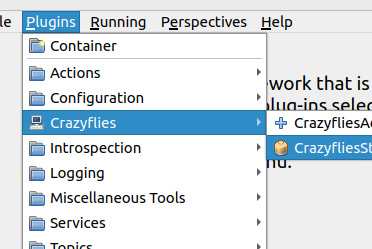
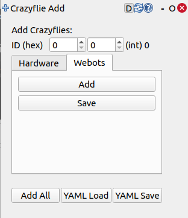
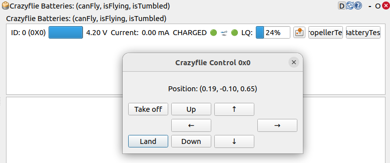

Usage
The crazyflies package provides a convenient launch file (framework.launch.py) which allows you to launch with hardware, webots or mixed crazyflies.
Sourcing (needs to be done in every new terminal):
source install/setup.bash
Launch the framework with:
ros2 launch crazyflies framework.launch.py backend:=webots
Select hardware, webots, or both as your backend.
When hardware or both is selected it is necessary to set the radio_channels argument (it defaults to 80):
ros2 launch crazyflies framework.launch.py radio_channels:=[100] backend:=hardware
Starting with webots or both will not automatically open Webots. You need to open Webots seperately and select the provided world (see Installation). (The Framework will then connect as extern controller to the Webots simulation).
Now it is time to connect your first crazyflie. To simplify this process ds-crazyflies provides two panels for RQT.
For this RQT first needs to discover these plugins, for this run the following command in a new terminal (in the ds-crazyflies folder):
source install/setup.bash rqt --force-discover

You should now find two new plugins in the RQT plugin list. Add both Plugins to your View.
Note
When inside VSCode
unset GTK_PATHneeds to be run before starting RQT, otherwise it will not start.The Add Plugin can then be used to connnect the crazyflie.
Choose the correct backend and provide the necessary parameters. (For the basic webots-world the id is 0).

The connected crazyflies are now listed in the Crazyflie List plugin.
From here you can monitor the battery voltage and connection status of each crazyflie. For the webots crazyflie most values do not update. When a crazyflie disconnects it will be greyed out.

The small control button between the LinkQuality and the PropellerTest button opens a small high level commander interface.
Here you can send takeoff, goTo and land commands to the crazyflie. The position field should also update correctly.
{kind=link}
{kind=link}
{kind=link}
Usage without RQT
The RQT-Plugins are just convenient buttons for service calls and topic publications. You can also connect a crazyflie by calling the appropriate service directly.
For connecting a hardware crazyflie:
ros2 service call /crazyflie_hardware_gateway/add_crazyflie crazyflie_hardware_gateway/srv/AddCrazyflie "id: 0 channel: 100 initial_position: [0.0, 0.0, 0.0] type: 'default'"
For connecting a webots crazyflie:
ros2 service call /crazyflie_webots_gateway/add_crazyflie crazyflie_webots_gateway_interfaces/srv/WebotsCrazyflie "id: 0"
The result should include a success=True.
When the crazyflie is connected, you can use the high level commander to control the crazyflie:
Note
Do not forget the ‘–once’ flag to only send the command once.
Takeoff
ros2 topic pub /cf0/takeoff crazyflie_interfaces/msg/Takeoff "group_mask: 0 height: 0.5 yaw: 0.0 use_current_yaw: false duration: 2.0" --once
goTo
ros2 topic pub /cf0/go_to crazyflie_interfaces/msg/GoTo "group_mask: 0 relative: true linear: false goal: [1.0, 0.0, 0.5] # TODO yaw: 0.0 duration: 2.0" --once
Land
ros2 topic pub /cf0/land crazyflie_interfaces/msg/Land "group_mask: 0 height: 0.0 yaw: 0.0 use_current_yaw: false duration: 2.0" --once
Note
Creating a Crazyflie/Safeflie will automatically set it up to be tracked by a motion capture system, but this is subject to change. If you instantiate a Crazyflie using the gateway (see Usage /Architecture), then you may provide a type field.